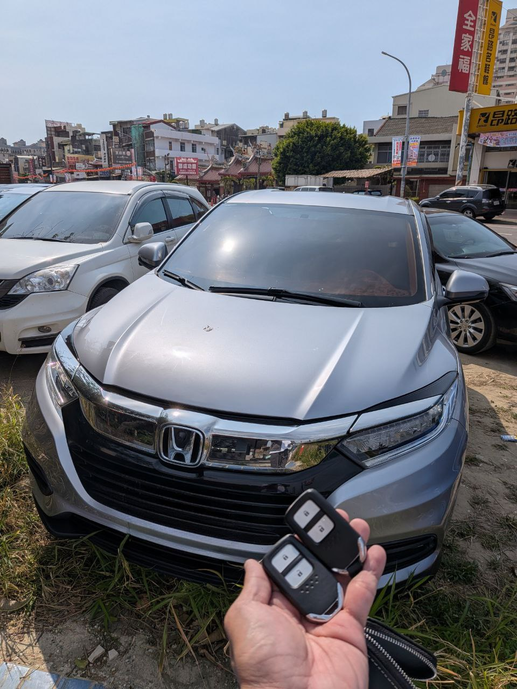

今天接獲沙鹿客戶委託，需為這台 2018 年 Honda HR-V 新增備份智慧感應鑰匙。Honda 車系的 IMMO 系統相對成熟，但對於數據匹配的嚴謹度要求極高。
技術重點：
- 通過專業診斷設備連接 OBDII 端口。
- 讀取 BCM 模組中的防盜授權數據。
- 清理現有 ID 並寫入新的晶片序號。
- 同步測試 Keyless Go 一鍵啟動與電磁門鎖感應。
極致核心提供現場解碼服務，不需拆卸電腦，在確保車輛完整性的前提下，快速恢復雙鑰匙使用狀態。如果您也遇到鑰匙感應不良或需要新增備份，歡迎諮詢。